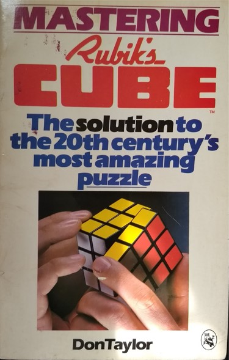
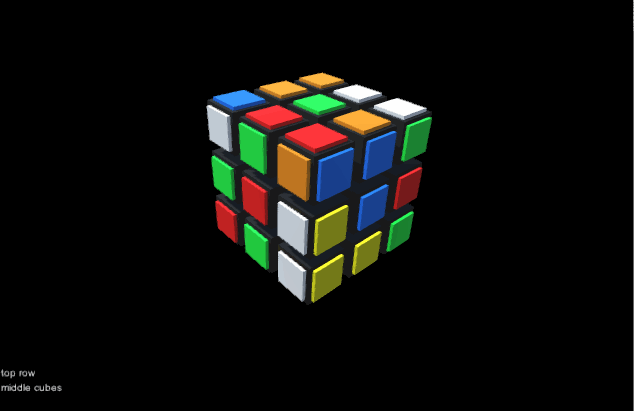
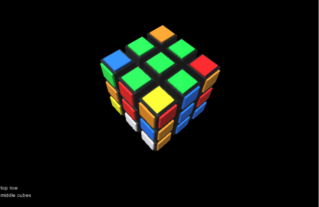
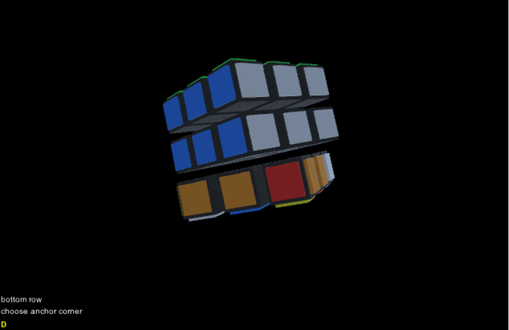
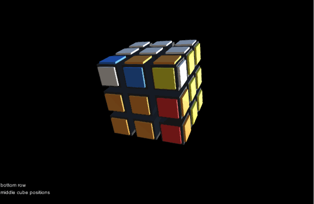
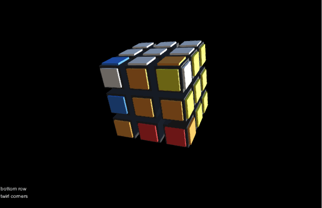
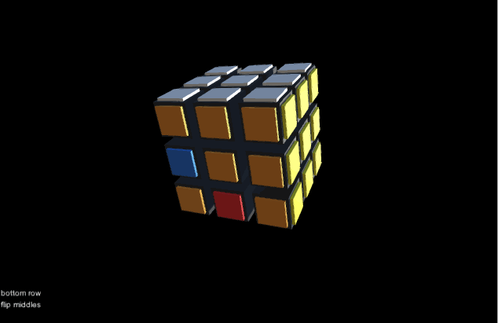

The interactive demo is here. Press space to step forward in the solve. Reload the page to get a new random scramble of the cube.
This project implements the algorithm for solving the Rubik's Cube described in the book Mastering Rubik's Cube by Don Taylor.

This is a cookbook approach which solves the cube row by row. For each task, we first select a cubie (or cubies) to solve. Then we search for a sequence of moves that places the cubie to the desired place without displacing the cubies we've already solved.







Current work on this project is looking at how to best visualize the sequence of moves for solving the cube.
Below is a test where colors are used to highlight which cubes are important for the sequence.